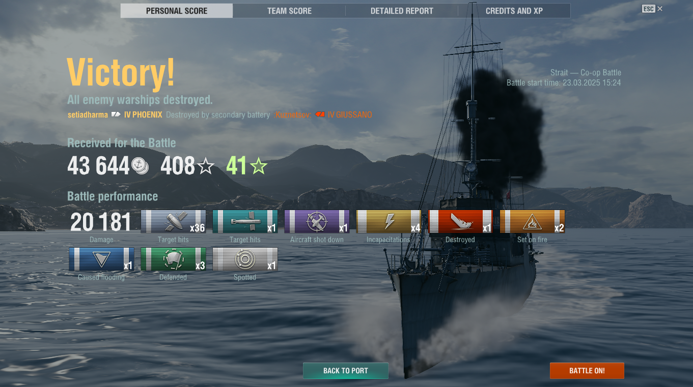

EKSTRA KULIKULER
SMK Negeri 1 Sukawati
Ekstrakurikuler adalah kegiatan di luar jam pelajaran sekolah yang bertujuan untuk mengembangkan minat, bakat, keterampilan, dan kepribadian siswa. Kegiatan ini biasanya bersifat non-akademis dan dilakukan di bawah bimbingan guru atau pelatih yang berpengalaman.
| Nama Ekstra | Jadwal Hari Ekstra | Jumlah Anggota |
|---|---|---|
| Pramuka | Jumat | 40 |
| Paskibra | Sabtu | 30 |
| Basket | Senin & Rabu | 20 |
| Volly | Selasa & Kamis | 25 |
| Teater | Minggu | 15 |

Ini adalah contoh paragraf yang berada di samping gambar. Kamu dapat menulis teks sepanjang yang kamu inginkan di sini. Atribut align="left" membuat gambar berada di kiri dan teks di sebelah kanannya. Namun, cara ini sudah usang dan tidak disarankan digunakan lagi.